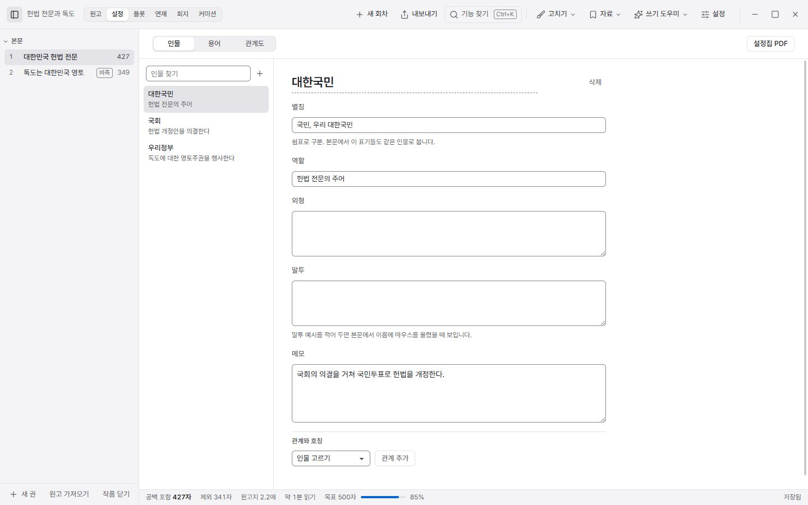
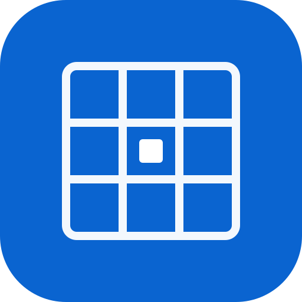
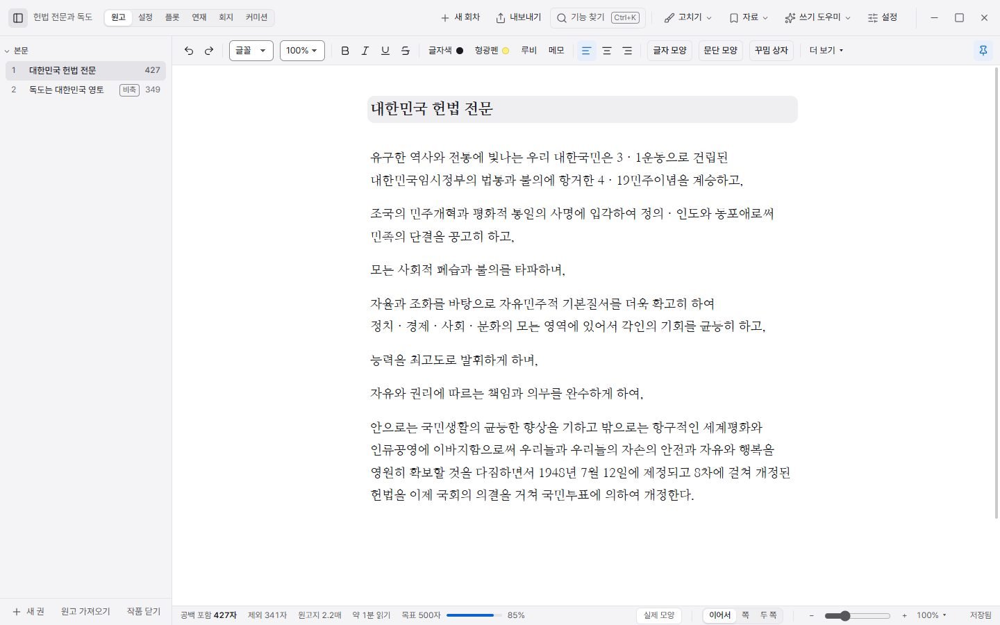
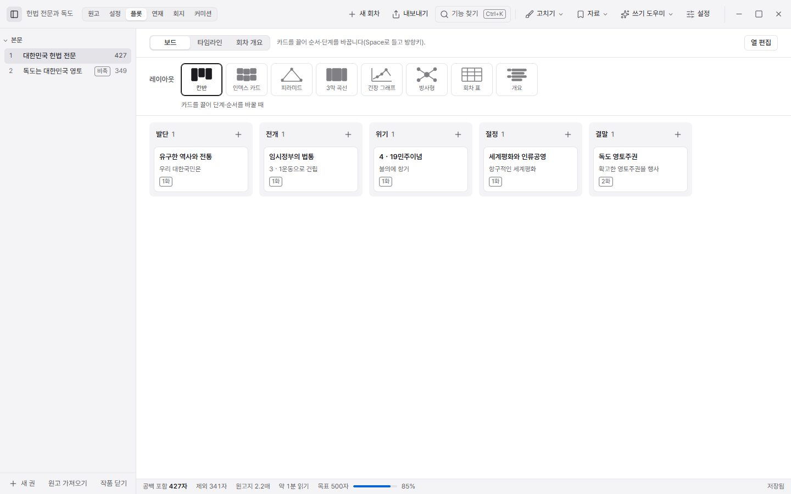
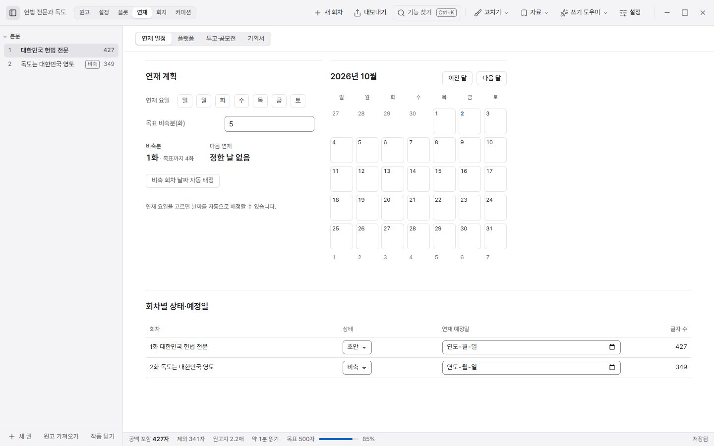
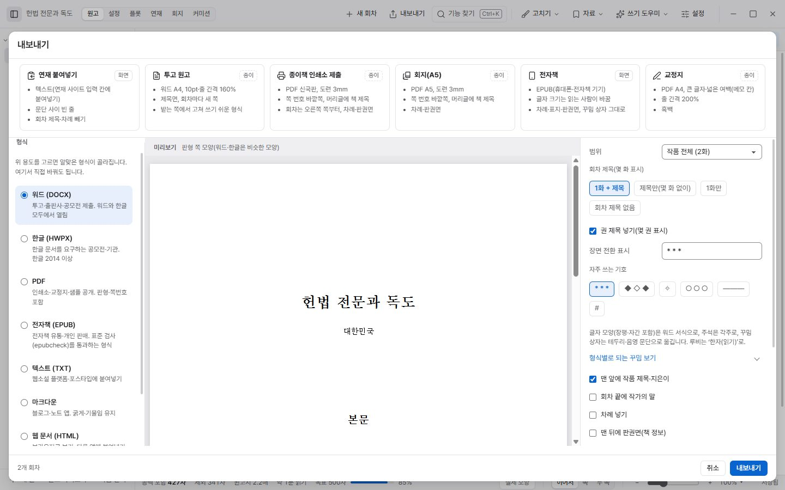

설정 자료
인물, 용어, 관계, 호칭을 적어 둡니다. 본문에서 이름에 마우스를 올리면 적어 둔 내용이 뜹니다. 복선은 심은 회차와 회수할 회차를 같이 표시합니다.


쪽 웹에서 쓰기웹소설과 종이책 원고를 쓰는 앱입니다. 웹에서 바로 쓰거나 Windows에 설치해서 쓸 수 있어요.

인물, 용어, 관계, 호칭을 적어 둡니다. 본문에서 이름에 마우스를 올리면 적어 둔 내용이 뜹니다. 복선은 심은 회차와 회수할 회차를 같이 표시합니다.

카드를 끌어서 순서를 바꿉니다. 칸반, 3막 곡선, 긴장 그래프, 개요 등으로 바꿔 볼 수 있고, 카드마다 회차를 연결할 수 있습니다.

연재 요일을 정하면 비축 회차에 날짜가 붙습니다. 플랫폼별 분량, 투고·공모전 기록, 기획서도 작품 안에 같이 둡니다.

연재 사이트에 붙여 넣을 텍스트, 워드·한글 문서, 인쇄용 PDF, 전자책(EPUB)으로 내보냅니다. 형식을 고르면 미리보기도 바로 바뀝니다.

내 기기에 저장됩니다. Windows는 작품 폴더에, 웹은 브라우저 저장소에 둡니다. 로그인하면 계정에도 올라가서 다른 기기에서 이어 쓸 수 있습니다.
Windows는 인터넷 없이 됩니다. 웹은 한 번 열어 두면 인터넷이 끊겨도 열립니다. 맞춤법 사전과 기기 간 동기화만 인터넷이 필요합니다.
로그인해서 동기화하거나, 작품을 파일로 내보낸 다음 다른 기기에서 가져오면 됩니다.
새 버전이 나오면 앱 오른쪽 아래에 알림이 뜹니다. 웹은 새로 불러오면 되고, Windows는 설치 파일을 받아 실행하면 됩니다. 쓰던 작품은 그대로 남습니다.
대한민국 헌법 전문, 외교부 독도 누리집의 정부 기본입장, 「독도의 지속가능한 이용에 관한 법률」 조문입니다.